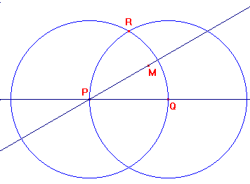
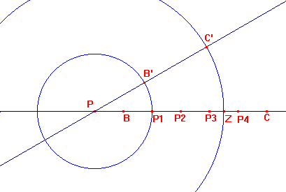
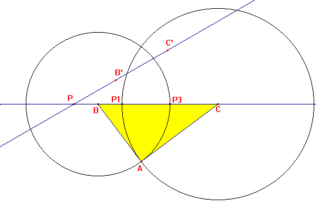
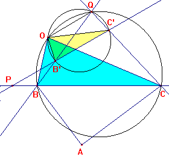
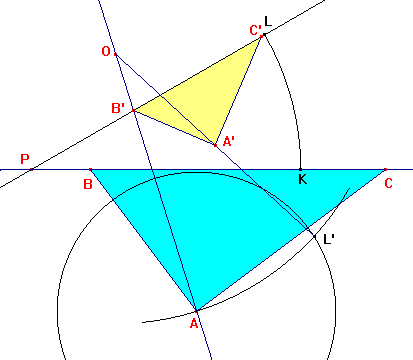
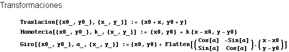
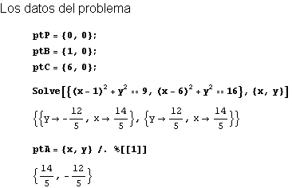
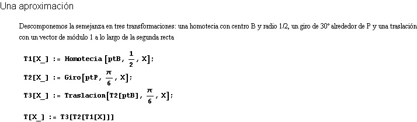
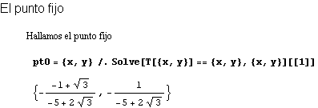
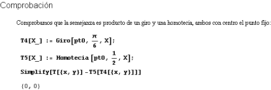

|
Las hipotenusas de dos triángulos rectángulos semejantes están sobre dos rectas m y m’ que forman un ángulo de 30º y se cortan en un punto P. Los vértices B y C del primero distan de P, PB=1, PC=6, y los vértices B’y C’ del segundo, homólogos de B y C en la semejanza, PB’=2 PC’=4,5. Los catetos del primer triángulo miden b=4 c=3. Sabiendo que la semejanza entre los dos triángulos es directa, halla: a) el centro o punto doble de la semejanza directa.
|
|
Martínez, J. Bujanda, M.P., Velloso,
J.M. (1984): Matemáticas-1 (EU de Magisterio de E.G.B.) Ediciones
S.M. Madrid (pag 382).
|
Solución de Francisco Javier García Capitán
Usemos Cabri Géomètre para resolver el problema. Al final, como complemento, se incluyen instrucciones de Mathematica para mostrar otra forma de enfocar el problema.
En primer lugar, para trazar dos rectas que forman un ángulo de 30º, elegimos un punto Q sobre una de ellas y trazamos las circunferencias con centros P y Q y radio PQ, que se cortan en un punto R. Ahora trazamos la recta que pasa por P y el punto medio de QR.

Sobre la primera recta señalamos un punto B, de manera que PB es el segmento unidad, y a partir de el usando repetidamente la simetría respecto de un punto obtenemos los puntos P1 simétrico de P respecto de B, P2 simétrico de B respecto de P1, etc hasta C, simétrico de P4 respecto de P3. Con centro P y radio PP1 trazamos una circunferencia que corta a la segunda recta en B', y con centro P y radio PZ siendo Z el punto medio de P3P4 trazamos otra circunferencia que cortará en C' a la segunda recta.

Usando B y C como centro y radios BP3=3 y CP1=4 obtenemos dos circunferencias que se cortarán en los posibles vértices A. Aquí hemos puesto el que queda separado de B'C' por la recta BC.

El punto A' podría obtenerse de forma similar dividiendo B'C' en cinco partes, pero en el ejercicio nos piden que lo hallemos de otra manera.
En primer lugar, para responder al apartado a), vamos a hallar el punto fijo de la semejanza.

Para ello, hallamos la intersección Q de las rectas BB' y CC' y el otro punto de intersección de las circunferencias BQC y B'QC'. Teniendo en cuenta quededucimos que
Por tanto, los triángulos OBC y OB'C' son semejantes y el triángulo OB'C' es el resultado de aplicar al triángulo OBC primero un giro y después una homotecia, ambos con centro O. El giro tendrá amplitud ÐBOB' =ÐCOC' =30º que es el ángulo formado por las rectas BC y B'C'. La homotecia tendrá razón 1/2, que es el cociente entre las longitudes B'C' y BC.

Para responder al apartado b) podriamos usar la herramienta Rotación de Cabri, pero para hacerlo algo más artesanal seguimos los siguientes pasos:



